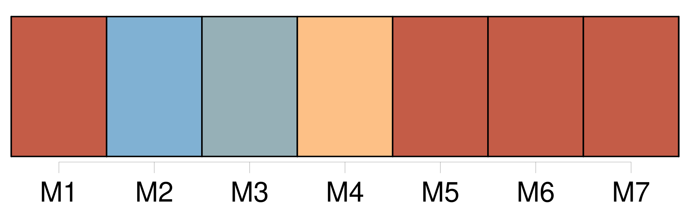
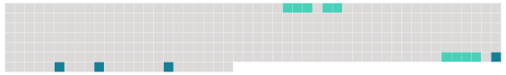

Longueur nb maillons : 7 mentions |
 |
J'étais en Normandie, chez un parent non marié, Jules de Banneville, seul avec lui, sa bonne, un valet et un garde dans [son château seigneurial] [Ce château] , vieux bâtiment grisâtre entouré de sapins gémissants, au centre de longues avenues de chênes où galopait le vent, semblait abandonné depuis des siècles. [5 phrases]
A une lieue en face du château, la falaise à pic tombait dans la mer ; et les puissants souffles de l'Océan, jour et nuit, faisaient soupirer les grands arbres courbés, pleurer le toit et les girouettes, crier [tout le vénérable bâtiment] , [qui] s'emplissait de vent par [ses] tuiles disjointes, [ses] cheminées larges comme des gouffres, [ses] fenêtres qui ne fermaient plus. |
 |
Il est possible de télécharger la ressource sur la page Ortolang |
Si vous avez des questions ou vous voyez des erreurs, merci d'envoyer un mail à silvia.federzoni89@gmail.com |